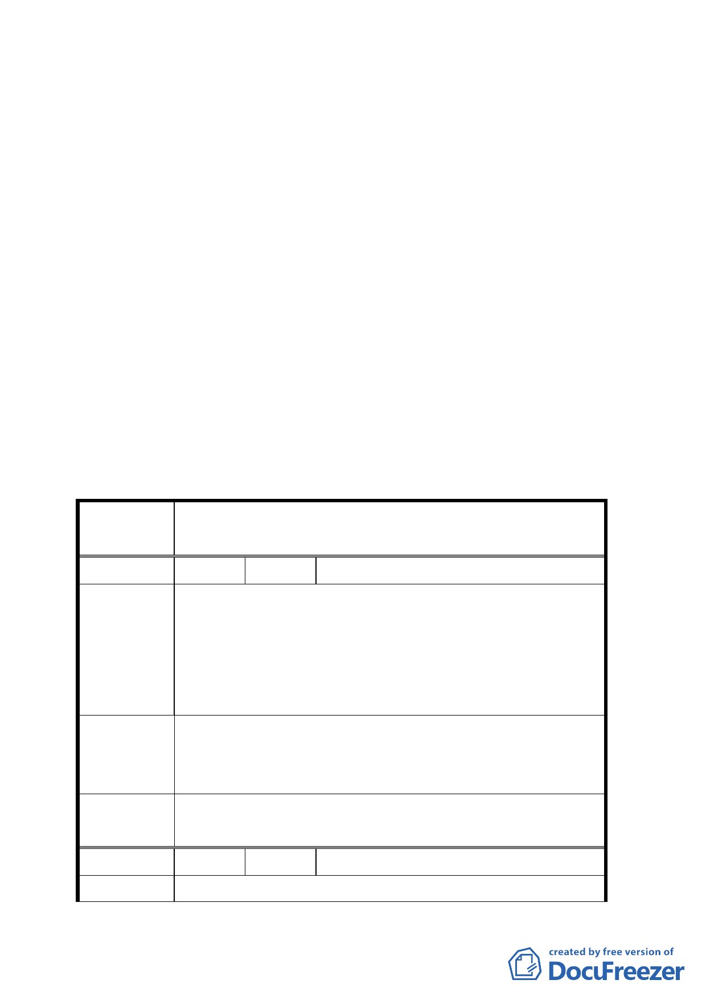

二、 本案係市府以九十三年五月二十一日府都規字第○九三
一○五七七一○三號函送到會，並自九十三年五月二十四
日起公開展覽三十天。
二、法令依據：都市計畫法第二十七條第一項第四款
三、申請單位：台北市政府
四、計畫範圍：詳計畫圖所示。
五、變更理由及內容：詳計畫報告書所示。
六、公民或團體所提意見：二件。（詳綜理表）
決議：
一、 本案照案通過。
二、 公民或團體所提意見決議詳后附綜理表。
臺北市都市計畫委員會公民團體陳情意見綜理表
案
名
變更台北市文山區實踐國中東側部分住宅區為國中
用地計畫案
編 號 １ 陳情人 賴子嘉、何勝義
建議位置：文山區實踐段一小段 272 地號
建議理由：忠孝街一段九巷一至十五號〈即文山區
陳情理由
實踐段一小段 273.274 地號〉住宅建屋
時後面防火巷道已依規定配合原有巷
道保留面積。
272 地號變更為國中用地後學校施築圍牆時仍請依
建 議 辦 法 照台電現有圍牆線施築，勿以地界線施築以保持該
防火巷到之現有寬度以利消防之需。
委員會決
議
建議事項留供校方參考
編 號 ２ 陳情人 台灣電力公司
陳 情 理 由 一、 本 案 源 於 台 北 市 立 實 踐 國 中 為 擴 大 校 地 之
第 19 頁，共 21 頁